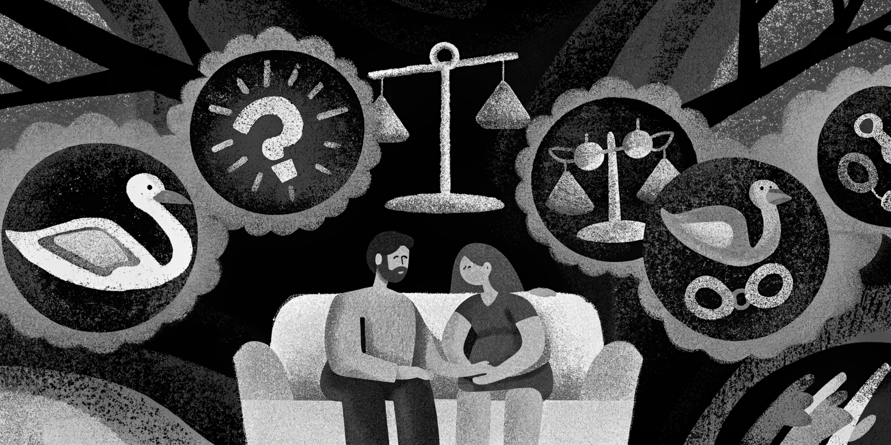

Day 1
“The city woke up to chaos...”

Day 30
“Homes were reduced to rubble...”

Pinned Content
This text will stay fixed as you scroll past.
Stories and Moments
“The city woke up to chaos...”
“Homes were reduced to rubble...”
This text will stay fixed as you scroll past.